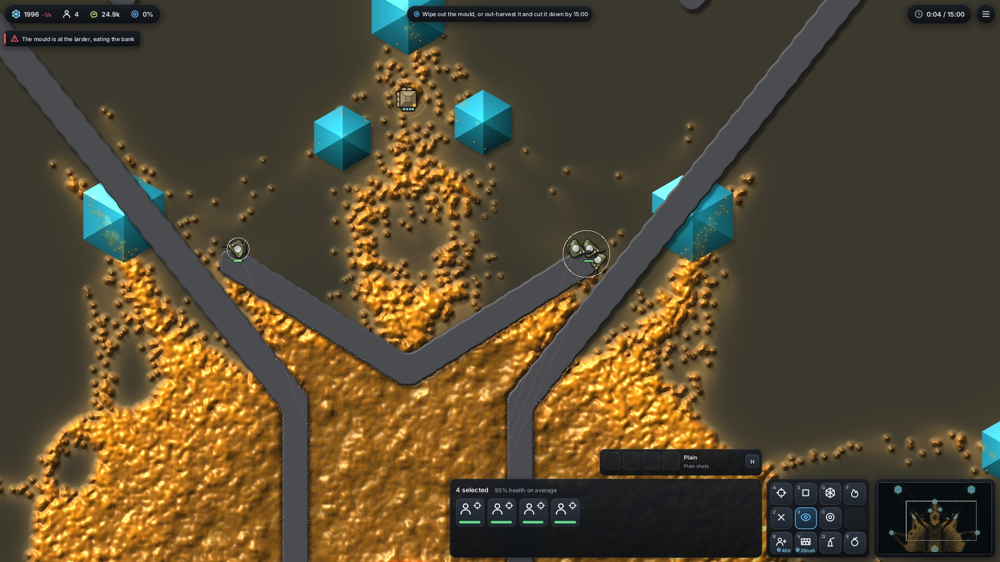
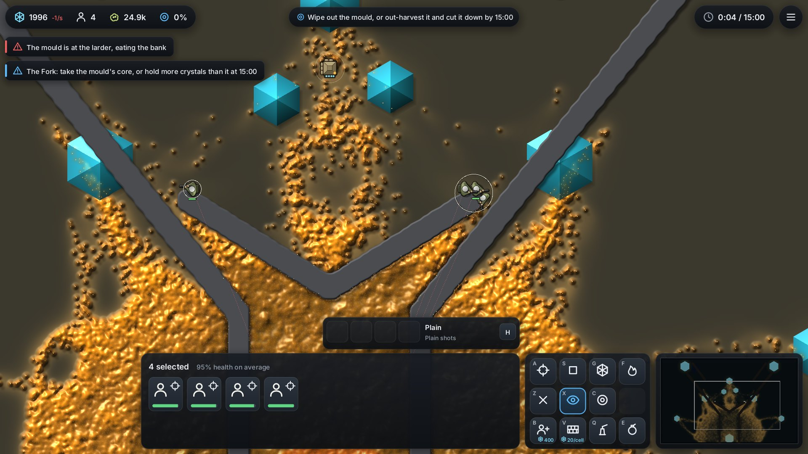
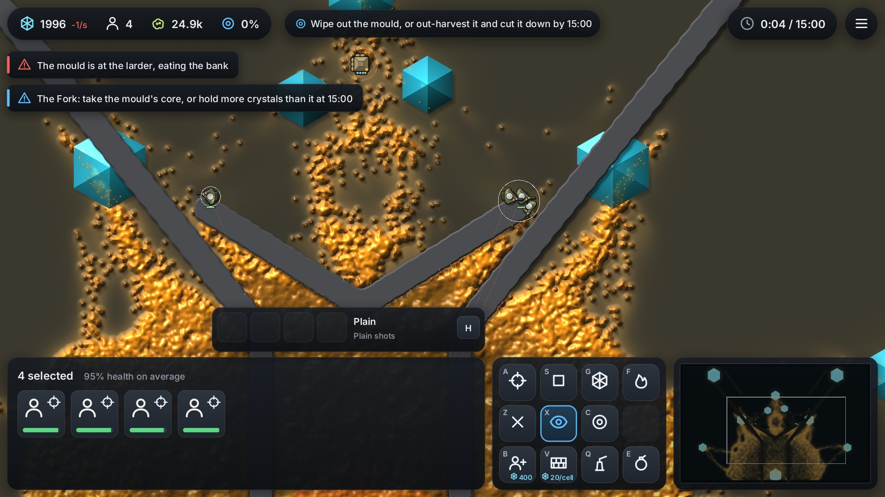
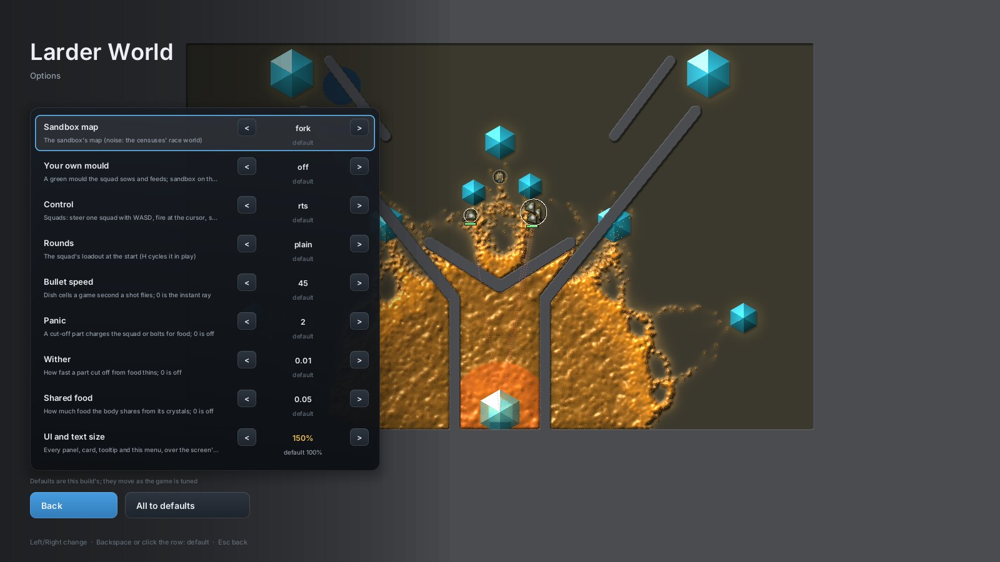
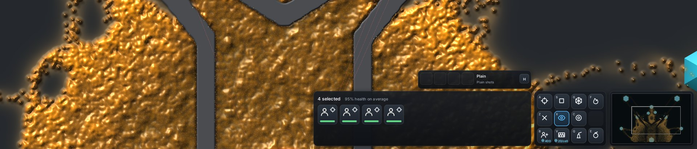
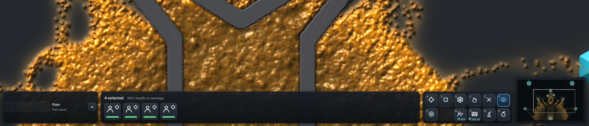
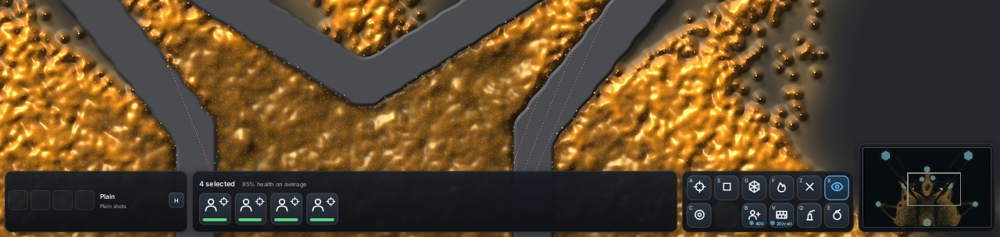
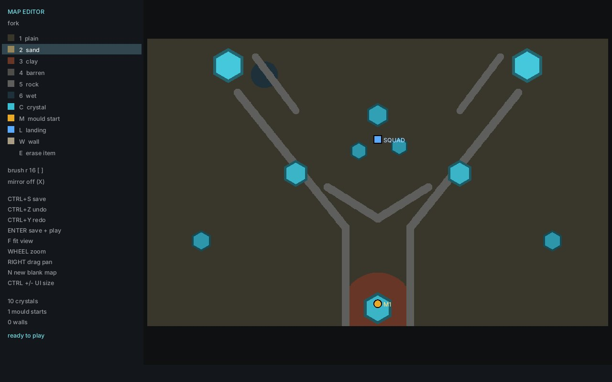
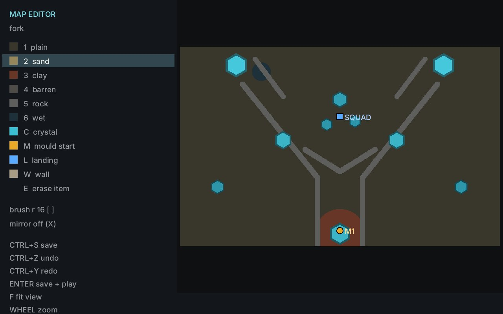

<title>Larder World UI Size</title>
<meta name="claude:viewport-fit-sides" content="cover">
<link rel="stylesheet" href="https://fonts.googleapis.com/css2?family=Inter:wght@400;500;600&family=Space+Grotesk:wght@500;600&display=swap">
<style>
/* Layout: one column of pictures, each with its numbers beside it as a caption strip. */
:root { --bg:#f3f4f6; --fg:#16191d; --muted:#5b6370; --panel:#ffffff; --line:#d9dde3; --accent:#1f8fa8;
  --display:"Space Grotesk",Inter,system-ui,sans-serif; --body:Inter,system-ui,sans-serif; }
@media (prefers-color-scheme: dark) { :root:not([data-theme="light"]) { --bg:#0f1215; --fg:#e8ebee; --muted:#98a1ad; --panel:#171b20; --line:#2a3038; --accent:#5cc4dc; color-scheme:dark } }
:root[data-theme="dark"] { --bg:#0f1215; --fg:#e8ebee; --muted:#98a1ad; --panel:#171b20; --line:#2a3038; --accent:#5cc4dc; color-scheme:dark }
body { background:var(--bg); color:var(--fg); font:15px/1.55 var(--body); padding-left:max(16px,env(safe-area-inset-left,0px)); padding-right:max(16px,env(safe-area-inset-right,0px)); padding-block:32px 48px }
main { max-width:1000px; margin:0 auto; display:grid; gap:28px }
h1 { font:600 2rem/1.15 var(--display); margin:0; text-wrap:balance }
h2 { font:600 1.15rem/1.3 var(--display); margin:0 }
p { margin:0; max-width:68ch }
.lede { color:var(--muted) }
figure { margin:0; background:var(--panel); border:1px solid var(--line); border-radius:10px; overflow:hidden }
figure img { display:block; width:100% }
figcaption { padding:12px 16px; display:flex; flex-wrap:wrap; gap:6px 18px; font-size:.9rem; color:var(--muted) }
figcaption b { color:var(--fg); font-weight:600 }
.k { font-variant-numeric:tabular-nums; color:var(--accent); font-weight:600 }
.pair { display:grid; grid-template-columns:1fr 1fr; gap:16px }
@media (max-width:700px) { .pair { grid-template-columns:1fr } }
ul { margin:0; padding-left:1.2em; display:grid; gap:4px }
kbd { font:600 .85em var(--body); border:1px solid var(--line); border-radius:4px; padding:0 5px; background:var(--panel) }
</style>
<main>
  <header style="display:grid;gap:8px">
    <h1>Larder World UI size</h1>
    <p class="lede">A UI and text size setting for the game and the map editor, saved between runs. Every picture is from the cloud's software GPU at 1920×1080 unless noted.</p>
  </header>

  <section style="display:grid;gap:8px">
    <h2>How to change it</h2>
    <ul>
      <li>In play or on the menu: <kbd>Ctrl</kbd> + <kbd>+</kbd> and <kbd>Ctrl</kbd> + <kbd>−</kbd> step through 75% to 300%. The same keys work in the map editor.</li>
      <li>Start menu, Options, last row: <b>UI and text size</b>. It takes effect at once.</li>
      <li>Command line: <code>ui=150%</code> (or <code>ui=1.5</code>) for one run.</li>
      <li>The size is saved to <code>%APPDATA%\Larder World\settings.txt</code> and both programs read it.</li>
      <li>The default is 100% of a size that already grows with the window's height. Windows display scaling above 100% now sets a floor, so a laptop at 200% gets twice the 1080-line size.</li>
    </ul>
  </section>

  <figure><figcaption><b>100%</b><span>UI unit <span class="k">1.0</span> px</span><span>bottom bar <span class="k">160 px</span> (15% of the screen)</span><span>Same as before this change</span></figcaption></figure>
  <figure><figcaption><b>150%</b><span>UI unit <span class="k">1.5</span> px</span><span>bottom bar <span class="k">240 px</span> (22%)</span><span>Top bar, alerts, card strip, command card and minimap all grow</span></figcaption></figure>
  <figure><figcaption><b>200%</b><span>UI unit <span class="k">1.9</span> px (capped)</span><span>bottom bar <span class="k">304 px</span> (28%)</span><span>The cap keeps the bottom bar under a third of the height and the row inside the width</span></figcaption></figure>

  <figure><figcaption><b>Options page, 150%, 1600×900</b><span>UI unit <span class="k">1.0</span> px (0.85 at 100%)</span><span>The menu holds its size where the options list would run off the bottom</span></figcaption></figure>

  <section style="display:grid;gap:8px">
    <h2>Wider, shorter bottom bar</h2>
    <p class="lede">The gun cards in their own panel at the far left, one row of squad cards filling the middle, the commands on two rows of six. The minimap keeps its old height in the corner. Bottom strip of each 100% frame.</p>
  </section>
  <figure><figcaption><b>Before, 1920×1080</b><span>bar <span class="k">160 px</span> (15%)</span><span>commands 4 × 3, squad panel 600 px wide</span></figcaption></figure>
  <figure><figcaption><b>After, 1920×1080</b><span>bar <span class="k">113 px</span> (10.5%)</span><span>gun cards far left, squad panel fills the middle, commands 6 × 2</span></figcaption></figure>
  <figure><figcaption><b>After, 1280×800</b><span>bar <span class="k">84 px</span> (10.5%)</span></figcaption></figure>

  <div class="pair">
    <figure><figcaption><b>Editor 100%</b><span>1280×800</span><span>panel <span class="k">300 px</span></span></figcaption></figure>
    <figure><figcaption><b>Editor 150%</b><span>1280×800</span><span>panel <span class="k">450 px</span></span></figcaption></figure>
  </div>
  <p class="lede">The editor's text now uses the game's Inter face, since its old pixel font could only double. At 150% in an 800-line window the panel's last rows run off the bottom; at the owner's window size they fit.</p>
</main>
